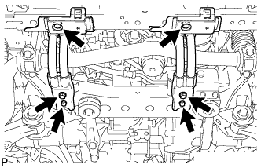
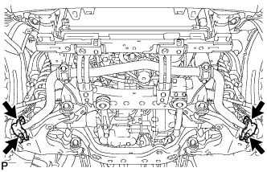
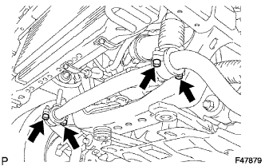
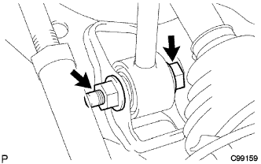
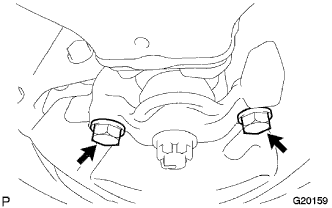
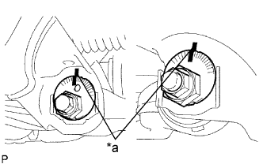
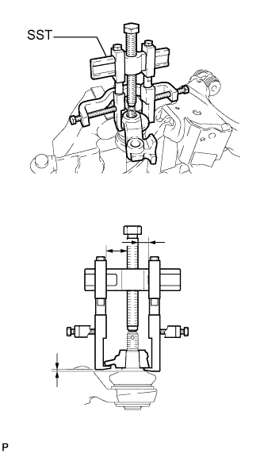

ПЕРЕДНИЙ НИЖНИЙ РЫЧАГ ПОДВЕСКИ > СНЯТИЕ |
| 1. СНИМИТЕ ПЕРЕДНЕЕ КОЛЕСО |
| 2. СНИМИТЕ НИЖНЮЮ ОБЛИЦОВКУ ПЕРЕДНЕГО БАМПЕРА (для моделей с KDSS) |
Освободите фиксатор, выверните 5 болтов и снимите нижнюю облицовку переднего бампера.
| 3. СНИМИТЕ СКОБУ ЭЛЕМЕНТА ПЕРЕДНЕЙ ПОДВЕСКИ В СБОРЕ (для моделей с KDSS) |
|  |
Выверните 6 болтов и снимите 2 скобы элемента подвески с передней рамы в сборе.
| 4. СНИМИТЕ КОНЦЕВОЙ КРОНШТЕЙН ПЕРЕДНЕГО СТАБИЛИЗАТОРА (для моделей с KDSS) |
|  |
Выверните 4 болта и снимите 2 кронштейна с нижнего рычага.
| 5. СНИМИТЕ ПЕРЕДНИЙ СТАБИЛИЗАТОР ПОПЕРЕЧНОЙ УСТОЙЧИВОСТИ (для моделей с KDSS) |
|  |
Выверните 4 болта и снимите 2 нижних кронштейна переднего стабилизатора и штангу переднего стабилизатора.
Снимите 2 втулки стоек переднего стабилизатора и втулки нижних кронштейнов переднего стабилизатора со штанги переднего стабилизатора.
| 6. ОТСОЕДИНИТЕ ПЕРЕДНИЙ АМОРТИЗАТОР С ЦИЛИНДРИЧЕСКОЙ ВИНТОВОЙ ПРУЖИНОЙ |
|  |
Снимите болт, гайку и шайбу.
Отсоедините передний амортизатор с цилиндрической винтовой пружиной от нижнего рычага подвески.
| 7. СНИМИТЕ ЛЕВЫЙ НИЖНИЙ РЫЧАГ ПЕРЕДНЕЙ ПОДВЕСКИ № 1 В СБОРЕ |
|  |
Выверните 2 болта и отсоедините крепление левого переднего нижнего шарового шарнира от передней полуоси.
|  |
Нанесите метки на кулачок регулировки развала № 2 и кулачок регулировки схождения в сборе.
| *a | Метка |
Снимите гайку, кулачок регулировки развала № 2, кулачок регулировки развала в сборе, болт, кулачок регулировки схождения в сборе, пластину регулировки схождения № 2 и левый нижний рычаг передней подвески № 1 в сборе.
Снимите шплинт и гайку.
|  |
С помощью SST снимите крепление левого переднего нижнего шарового шарнира.